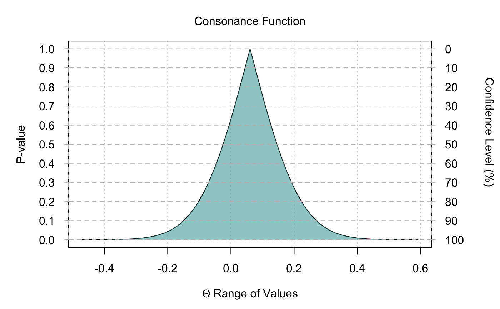

plot_concurve.RdTakes the dataframe produced by the interval functions and plots the p-values, s-values, consonance (confidence) levels, and the interval estimates to produce p- and s-value functions using base R graphics.
plot_concurve(type, data, measure, intervals, title, xlab, ylab1, ylab2, fontsize, fill)
| type | Choose whether to plot a "consonance" function or a "surprisal" function. The default option is set to "consonance". The type must be set in quotes, for example plot_concurve(type = "surprisal") or plot_concurve(type = "consonance"). |
|---|---|
| data | Dataframe where the results from a curve_ function is stored. |
| measure | Indicates whether the object has a log transformation or is normal/default. The default setting is "default". If the measure is set to "ratio", it will take logarithmically transformed values and convert them back to normal values in the dataframe. This is typically a setting used for binary outcomes and their measures such as risk ratios, hazard ratios, and odds ratios. |
| intervals | Indicates whether the limits for different consonance levels should be plotted on the graph. By default, this is set to FALSE. When set to TRUE, it will plot 50%, 75%, 95%, and 99% intervals. |
| title | The title for the graph. By default, it is set to "Consonance Function". In order to set a title, it must be in quotes. For example, plot_concurve(type = "consonance", data = data, title = "Custom Title"). |
| xlab | The label for the x-axis. By default, it is set to "Theta.". In order to set a label, it must be in quotes. For example, plot_concurve(type = "consonance", data = data, xlab = "Custom Caption"). |
| ylab1 | A label for the y-axis on the left side of the graph. By default, it is set to "P-value." In order to set a custom y-axis label, it must be in quotes. For example, plot_concurve(type = "consonance", data = data, ylab1= "Custom y-axis title"). |
| ylab2 | A label for the y-axis on the right side of the graph. By default, it is set to "Confidence Level."" In order to set a custom y-axis label, it must be in quotes. For example, plot_concurve(type = "consonance", data = data, ylab2= "Custom y-axis title"). |
| fontsize | Controls the font size in the graphs. By default, it is set to size 12.). |
| fill | Item that allows the user to choose the color of the ribbons in the graph. By default, it is set to color = "#239a98". The inputs must be in quotes. |
Plot with intervals at every consonance level graphed with their corresponding p- and s-values.
Amrhein V, Trafimow D, Greenland S. Inferential Statistics as Descriptive Statistics: There Is No Replication Crisis If We Don’t Expect Replication. Am Stat; 2018.
Greenland S. Valid P-values behave exactly as they should: Some misleading criticisms of P-values and their resolution with S-values. Am Stat. 2018;18(136).
Greenland S. The unconditional information in P-values, and its refutational interpretation via S-values. 2018.
Shannon CE. A Mathematical Theory of Communication. Bell System Technical Journal. 1948;27(3):379-423. doi:10.1002/j.1538-7305.1948.tb01338.x
Poole C. Beyond the confidence interval. Am J Public Health. 1987;77(2):195-199.
Sullivan KM, Foster DA. Use of the confidence interval function. Epidemiology. 1990;1(1):39-42.
Rothman KJ, Greenland S, Lash TL, Others. Modern epidemiology. 2008.
# Simulate random data GroupA <- rnorm(50) GroupB <- rnorm(50) RandomData <- data.frame(GroupA, GroupB) RandomModel <- lm(GroupA ~ GroupB, data = RandomData) intervalsdf <- curve_gen(RandomModel, "GroupB") plot_concurve(type = "consonance", data = intervalsdf)